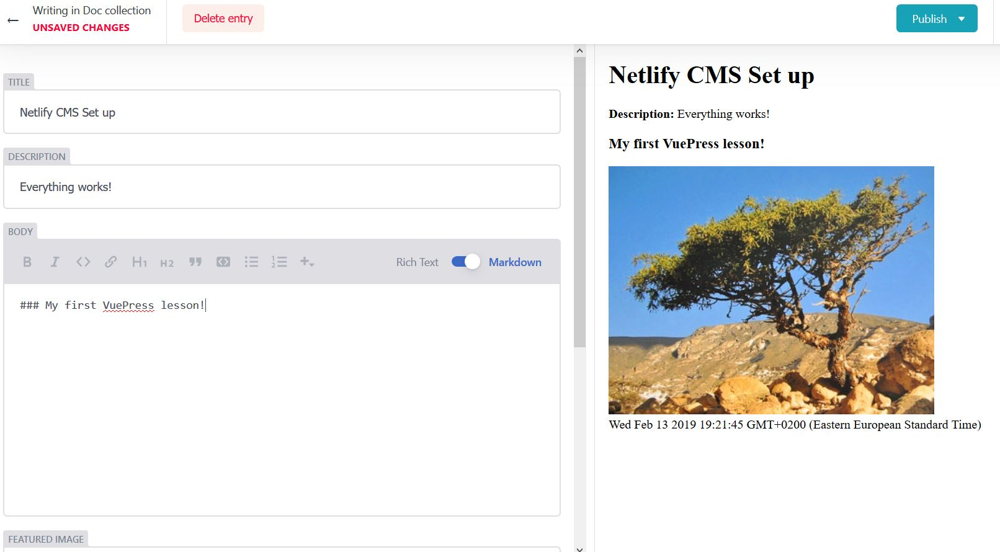
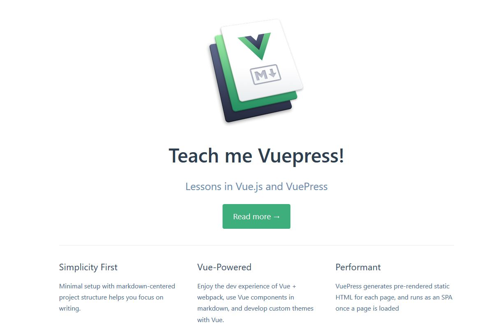
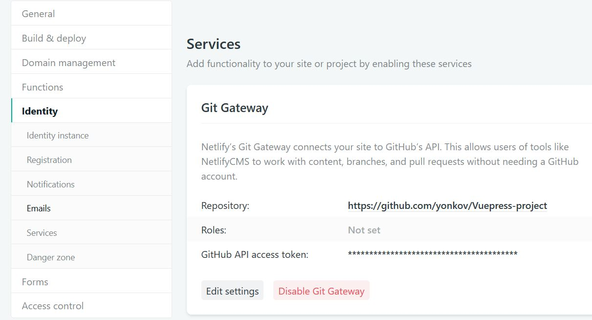

Setting Up Vuepress With Netlify CMS
Example repo: https://github.com/yonkov/Vuepress-project
VuePress is one of the most promising frameworks to create extremely fast and lightweight static websites that act as single page applications. By the end of this tutorial, you will know how to set up VuePress and add a light-weight and easy to use content management system to it, called Netlify CMS.

Let’s get started!
Table of Contents
The Rise of Static Site Generators
Static site generators are becoming more and more popular these days due to better performance, low cost, high security and better developer experience. These websites use an architectural approach called JAMstack to generate an entirely static website by using source files. It was not so long ago when the world wide web was dominated by static websites. All the content was delivered by editing static html files. Soon, content management systems like WordPress emerged. WordPress allowed non technical users to take control over their website and manage its content using an intuitive, easy to use GUI interface. However, with the rise of technology and the front-end frameworks, the need for faster paced workflow emerged. The traditional CMS systems gained notoriety for being slow and clunky to work with. Moreover, maintaining a database automatically makes the web application a subject to security vulnerabilities and also leads to performance bottlenecks. A traditional CMS framework requires setting up a virtual environment and managing a database. This is an unnecessary overhead for simple websites such as blogs, documentation websites and portfolios, which do not really require any server-side logic. To address all these issues, the static site generators emerged.
The first static website generator was Jekyll, written by GitHub co-founder, Tom Preston-Werer in 2008. It is the most popular framework of its kind mainly because it was adopted by GitHub. However, Jekyll is NOT as straightforward as developers would like it to be. Another downside is Jekyll’s build time. While this is not an issue for a two-page website, larger websites may suffer from really long build times. To address this, Hugo appeared in 2013. Hugo is a really fast static website generator written in Go. (By the way I am a huge fan of Hugo myself and this website is built with Hugo!) Soon, other generators also gained popularity, such as Gatsby or Hexo. StaticGen.comprovides a regularly updated list with all static generators, based on their GitHub popularity.
Why VuePress
So, with the market getting more and more saturated, how did VuePress even got our attention?
Its main strength is the technology it incorporates and the community behind it.
VuePress is built on vue.js, an extremely adoptable and easy to use modern javascript architecture that allows for creating single page applications. Vue.js provides awesome developer experience and is much easier to pick compared to other javascript frameworks such as react.js or angular.js. Single page applications are a new revolutionary approach in web programming that works inside the user’s browser and does not require page reloading during use. In this way, once loaded, SPA website are extremely fast and provide awesome user experience. VuePress was developed in 2018 by Evan You, a Google employee that also came up with vue.js. With the implementation of vue.js Evan You has clearly shown to the dev community that he knows how to develop easy to use and reliable tools that provide awesome developer experience. VuePress was originally built as a software documentation website, however you can also use it to create blogs or portfolio websites. In my opinion, it is one of the easiest and fastest ways to build single page application websites.
Why Netlify CMS
Netlify CMS is an open source, fully-functional content management system that allows non-technical users to edit website content of static site generators. Yes, you hear me right, this is really the best of the two worlds! I recently delivered a VuePress project for a client and it worked great for her but she wanted to have an easy way to edit its content and not having to use a Git system for that. The solution was Netlify.cms and the customer simply loved it! Netlify CMS is a light-weight CMS built on react that enables users to add and edit content without the overhead to maintain a database and without having to bother with performance and security issues! If this is still not enough, you can use Netlify CMS with Netlify, an outstanding free CDN host that is in my opinion far better and more performant than using a paid php-mysql host. Moreover, you are free to use Netlify CMS with different hosts.. i simply could not recommend it more! So, enough talking, let’s get done with the actual set up!
How to Install VuePress
To install VuePress on your machine, create a vuepress folder and open the terminal in that same folder (If you are on windows, you can click on the folder navbar and type “cmd”. This will automatically open the windows console in the specified location) First, you need to install yarn, if you do not have it. It is a package manager for javascript and according to VuePress documentation it is recommended over npm. Here is a nice guide on how to install yarn.
After that, use yarn to install VuePress:
yarn install
yarn global add vuepress
yarn add -D vuepress
echo '# Hello VuePress' > README.md
mkdir docs
Now, move the readme.md file in the docs folder and add this configuration as a second property to the package.json file:
package.json
"scripts": {
"docs:dev": "vuepress dev docs",
"docs:build": "vuepress build docs"
}
We need this scripts to tell Netlify how to serve our webste. Go on and run the project locally: yarn docs:dev
If all went well, you should see you project in the browser with the “Hello VuePress” message. Now that we have a very basic setup, let’s put some configuration in it to make it look good!
Create a config.js file at docs/.vuepress/ and add the following code:
docs/.vuepress/config.js
module.exports = {
title: 'Teach Me VuePress',
description: 'Lessons in Vue.js and VuePress',
}
Now add front matter in the Readme.md file:
docs/Readme.md
---
home: true
heroText: Teach me Vuepress!
heroImage: https://vuepress.vuejs.org/hero.png
actionText: Read more →
actionLink: /
features:
- title: Simplicity First
details: Minimal setup with markdown-centered project structure helps you focus on writing.
- title: Vue-Powered
details: Enjoy the dev experience of Vue + webpack, use Vue components in markdown, and develop custom themes with Vue.
- title: Performant
details: VuePress generates pre-rendered static HTML for each page, and runs as an SPA once a page is loaded
footer: MIT Licensed | Copyright © 2018-present Evan You
---
## Hello VuePress!
Check localhost again. You should be able to see this:

Not bad for a very basic setup, huh? You can go on to customize it even more and even develop your own custom theme. Use my repo for an example of a complete website built with VuePress. I have deployed an open-source VuePress project on GitHub using VuePress default documentation theme. Feel free to use it as a reference. Now you are safe to build the static version of the website (the one you are going to serve online) with the following command:
yarn docs:build
Add VuePress to Github
I am going to use my GitHub repo to deploy the VuePress project to Netlify free hosting service and then use Netlify CMS for CMS. However, you can use other git clients, if you want.
Setting up and uploading the repo to GitHub is a standard process. You first need to create a repo inside your GitHub account and then commit the changes. If you are using Windows, install GitBash. Then type the following commands in the console:
git init
git add .
git commit -m "update vuepress content"
git remote add origin remote repository URL
git remote -v
git push origin master
If you need refreshment with this, check Github’s documentation. Basically, it is a fairly straightforward process, however, it can be a bit confusing if you are doing it for the first time. Make sure to upload the whole docs folder and the package.json, without the node modules.
Deploy to Netlify
We will host the static website using Netlify, in my opinion, this is the best CDN for static websites. We first need to do some changes to our package.json file to allow Netlify to serve our content:
package.json
{
"name": "vuePress-project",
"version": "1.0.0",
"description": "Single Page Application website example. The website uses VuePress static site generator and the vue.js framework, developed by Evan You. VuePress is a brand new web development tool that singnificantly enhances and simplifies the SPA workflow. At the same time it provides a first-class user experience by developing an ultra-fast and extremely lightweight SPA website.",
"license": "MIT",
"main": "index.js",
"scripts": {
"test": "echo \"Error: no test specified\" && exit 1",
"docs:dev": "vuepress dev",
"docs:build": "vuepress build"
},
"repository": {
"type": "git",
"url": "git+https://github.com/your-username/Vuepress-project.git"
},
"keywords": [],
"author": "",
"bugs": {
"url": "https://github.com/your-username/Vuepress-project/issues"
},
"homepage": "https://github.com/your-username/Vuepress-project#readme",
"devDependencies": {
"vuepress": "^0.14.8"
}
}
Change the data with your website’s info and change GitHub’s repo location. To upload your website, go to Netlify’s website to create an account
After you have set up an account, you need to link your GitHub repo to it.
Use the following settings:
Build command: npm run docs:build
Publish directory: .vuepress/dist
Hit the deploy button and your website should be live!
Integrate Netlify CMS to VuePress
To set up Netlify CMS, you need to create an “admin” folder inside \docs.vuepress\public directory. Inside the admin folder create two files: config.yml and index.html. In the config file are all configuration options to access the CMS UI.. Here is an example of these two files:
config yml
backend:
name: github
repo: yonkov/Vuepress-project
branch: master
media_folder: ".vuepress/public/"
public_folder: "../../"
display_url: https://teachenglish.netlify.com
collections:
- name: "doc" # Used in routes, e.g., /admin/collections/blog
label: "Doc" # Used in the UI
folder: "lessons" # The path to the folder where the documents are stored
create: true # Allow users to create new documents in this collection
slug: "{{slug}}" # Filename template, e.g., YYYY-MM-DD-title.md
show_preview_links: true
fields: # The fields for each document, usually in front matter
- {label: "Title", name: "title", widget: "string"}
- {label: "Description", name: "description", widget: "string"}
- {label: "Body", name: "body", widget: "markdown"}
- {label: "Featured Image", name: "image", widget: "image"}
- {label: "Publish Date", name: "date", widget: "datetime"}
- {label: "Categories", name: "categories", widget: "list"}
index.html
<!doctype html>
<html>
<head>
<meta charset="utf-8" />
<meta name="viewport" content="width=device-width, initial-scale=1.0" />
<title>Content Manager</title>
<link rel="stylesheet" href="https://unpkg.com/netlify-cms@1.8.2/dist/cms.css" />
<script src="https://identity.netlify.com/v1/netlify-identity-widget.js"></script>
</head>
<body>
<!-- Include the script that builds the page and powers Netlify CMS -->
<script src="https://unpkg.com/netlify-cms@^2.0.0/dist/netlify-cms.js"></script>
</body>
</html>
Replace the info with your own data and make sure you preserve the formatting, as one or two more spaces can break the entire configuration. Again, feel free to use my GitHub repo as an example. You can also refer to Netlify CMS official documentation. There you can find a detailed guide with all the available configuration options.
You can modify or add some other options to the config file. The backend option is required and it specifies how to access the website’s content. The media_folder and public_folder option let’s you upload your images to the correct location. The folder option specifies in which folder you can modify content. You can change the label properties the way you want them to appear in the UI, however the name properties should be the same as the ones you use in VuePress front matter.
Now, when you go to https://yourwebsite.netlify.com/admin, you should be able to see a login page. We are going to enable GitHub login but you also have other options that are listed here. In your Netlify account, click on Identity tab and choose registration preferences to “invite only”. For external providers, choose GitHub. Now, scroll down to services and in Git Gateaway section, you need to specify your repository’s url and GitHub API access token.

Click “generate access token in GitHub” and give permission to Netlify to have access to your git repository where the VuePress project resides. Finally, you need to set up OAuth App with Github. On GitHub, navigate to settings => developer settings and the then click on “New Oauth App”.
For authorization callback URL specify:
https://api.netlify.com/auth/done
Use the generated token in your Netlify account. Now, when you navigate to https://yourwebsite.netlify.com/admin, you should be able to log in the CMS dashboard! The CMS is so fast and easy to work with that you will simply fall in love with it.
So, it was quite a lot of work but it proved to be fruitful. Now it is easier than ever to edit content of Single Page App and your clients, collaborators and friends will simply love your app!
Switching off the Lights Part Three - Adding Dark Mode to VuePress
Read more: